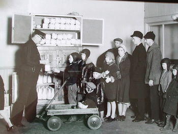

<!doctype html>
	<head>
		<meta charset="UTF-8">
		<title>Financial Advice from the Great Depression</title>
    <link rel="stylesheet" href="stylesheets/ex4.css">
	</head>
<body>
<p><a href="index.html">&lt;&lt; back home</a></p>
<h1>How to Apply Lessons Learned from the Great Depression</h1>

<hr />

<p>Recent economic times may mirror what American grandparents or great-grandparents went through in the Great Depression. While this time may be a challenge, it may be an opportunity to look back and learn how previous generations coped with tough economic times. Hopefully, we&#8217;ll never need to relive their lessons learned, but at the very least we can appreciate their resourcefulness and gain perspective on our own situations.</p>

<h2>Steps</h2>

<p><strong>1. Quit using credit.</strong> If you don&#8217;t have the cash to make a purchase, then don&#8217;t buy it. If you have credit cards, make sure to pay the balance off every month. If you can&#8217;t pay off the balance, then cut up the credit card(s) and work on paying down what you owe. One of the first lessons learned by people who survived the Great Depression was to never borrow money unless you have a clear plan for how you&#8217;re going to pay it back. And when layoffs are a reality, expecting to pay for it with your Christmas bonus or your next paycheck is not a sound plan. If you don&#8217;t have the money to pay for it right now, don&#8217;t buy it.</li>
</ol>

<p><strong>2. Nurture positive relationships with family and friends.</strong> They will see you through difficult times. But you need to work together and stop being in denial and expect a free ride.</p>
<ul><li>Be honest with your family and friends that you are facing difficult times financially. And don&#8217;t be ashamed&#8211;good people have money troubles.</li>
<li>Discover ways to barter and help each other.</li>
<li>Talk to Your Children About a Financial Crisis You don&#8217;t want to worry your young children, but doing so in a forthright, reassuring way will be more helpful than keeping up a lie. Kids usually want your time and attention more than stuff, anyway.</li>
<li>Get Adult Kids to Pay Their ShareA healthy adult should not expect parents to pay their way. And a healthy adult certainly shouldn&#8217;t expect their children to pay their way. Baby boomers, it&#8217;s time to grow up. If this has been the case, this is as good a reason as any to stop this enabling behavior.</li>
<li>Have a Depression Dinner. Research what people ate during the Depression. It wasn&#8217;t all pinto beans and corn bread.</li>
</ul>
<p><strong>3. Enjoy the simple pleasures.</strong> During the Depression, people still had fun, just not lavishly expensive fun. Children had soapbox derbies, teenagers had dance contests, and everyone played Monopoly, did puzzles, read, and listened to the radio. Get together to discuss philosophy or pray; play poker or make crazy quilt pillows; play instruments and dance. In those days, it took some imagination and ingenuity, but they had a lot of fun without hanging out at the mall, and you can too. Many of the friendships and alliances formed during the Great Depression on the basis of such activities stood the test of time.</p>
<p><strong>4. Do it yourself.</strong> When money is short, you don&#8217;t really have a choice - either you do it yourself, or it doesn&#8217;t get done. Learn how to fix and maintain everything in your home, in addition to your clothes and accessories.</p>
<ul>
  <li>Sew. Learn how to mend torn seams, hem, sew buttons, and sew zippers. This will make your clothes last much longer. When you need new clothes, either shop at second-hand stores and tailor the clothes so they fit, or buy fabric and make your own clothes from patterns instead of buying an expensive outfit just for the designer label. You can also apply your sewing skills to recycle old clothes into handy new things, like turning an old pair of jeans into a tote bag.</li>
  <li>Get in touch with your inner handyman (or handywoman). Do you know how to fix a running toilet? Pack a water shutoff valve? Change a clothes drier belt? Replace an interior doorknob?</li>
  <li>Change the oil in your car. While you&#8217;re at it, you might want to check and change the fluids, battery and cabin air filter yourself. Alternatively, if you want to develop a good relationship with your auto mechanic, see if you can barter - perhaps an oil change in exchange for a professional haircut? Or a tire rotation for meat loaf?</li>
</ul>
<p><strong>5. See frugality as a virtue.</strong> There&#8217;s a difference between being frugal and being cheap or stingy. A frugal person makes the most of what they have; a cheap person is just focused on not spending money. During the Great Depression, frugality was seen as a positive trait. During hard times, it&#8217;ll help you get by, but when things get better, maintaining those habits will help you build wealth. Plus, frugality requires planning, creativity, and critical thinking - all of which are important life skills, regardless of the state of the economy.</p>
<p><strong>6. Treat food with respect.</strong> When times get tough - really tough - you appreciate having food on the table. You might never know what it&#8217;s like to have to eat wet bread for dinner, but you don&#8217;t have to get to that point to make the resolution to never waste food. &#8220;Take all you want, but eat all you take.&#8221;  Cook food from scratch and, if you can, go straight to the source (such as dealing directly with farmers) or become your own source: grow your own food, keep livestock, gather wild edibles, and/or hunt wild game if possible and legal. Whatever it is that you procure for food, never let it make it to the garbage can without a very good reason.</p>

<ul>
  <li>Save Money by Shopping Once a Month</li>
  <li>Get Started in the Slow Food Movement </li>
  <li>Keep Chickens in a City</li>
  <li>Learn to cook. There is probably no skill that will get you through hard times with equanimity than being able to rustle up a good meal for yourself out of whatever is around. </li>
  <li>Buy preserved (canned, dried, etc.) foods in bulk whenever the cost is lower than buying a smaller size.
    -Avoid &#8220;convenience&#8221; foods, as they are usually more expensive and less healthy. Learn to cook. You can save a lot of money by cooking from scratch rather than ordering take-out or take-away. A good thrifty cook can make a tasty, nutritious meal from inexpensive ingredients and &#8220;stretch a meal&#8221;. Also, leftovers are much cheaper to bring to work or school than buying lunch.</li>
</ul>
<p><strong>7. Don&#8217;t Treat Your Soil Like Dirt</strong>. The importance of soil conservation came to the forefront during the Dust Bowl. Due in large part to destructive farming practices, vast areas of the United States were turned into sterile, lifeless landscapes and many families left destitute.
  </li>
  </ol>
  
<ul>
  <li>If you are involved in agriculture, practice good soil management for your locale.</li>
  <li>As a citizen, advocate for and support good soil management: protective farming styles, community gardens, sensible logging practice, and avoidance of destroying sensitive ecological systems whenever possible. </li>
  <li>In your own backyard, check and prevent erosion through good landscaping, compost if possible, use gardening, lawn, and landscaping processes that build soil.</li>
</ul>
<p><strong>8. Reuse, reuse, reuse.</strong> The amount of stuff you have should already be reduced by your limited spending, and you&#8217;ll always want to think twice before throwing anything away, whether it&#8217;s into the trash or the recycling bin. Get everyone involved, especially children - hold up an item that you would normally throw away and ask, &#8220;How can we reuse this?&#8221; Here are some ideas to get you started:</p>
<ul>
  <li>Reuse an Empty Altoids Tin    </li>
  <li>Turn a t-shirt into a sexy bikini or baby romper    </li>
  <li>Reuse Old Shower Curtains    </li>
  <li>Recycle Your Socks    </li>
  <li>Reuse old containers</li>
</ul>

<p><strong>9. Practice good domestic skills.</strong> Keep your home clean, tidy, organized, and hygienic. For one, you will save money on waste and replacement. But on a powerful level, you can feel more in control of your corner of the world. Whatever your worst expectations of being broke are, living in a dirty, disorganized place is likely to make it seem like they&#8217;re coming horribly true.</p>

  <p><strong>10. Be thankful. </strong>When you&#8217;re economically strapped? Of course. Make a list of the top five things you couldn&#8217;t live without, and chances are, all of those things are not possessions. Most of all, be optimistic. As one Great Depression survivor said, &#8220;I never thought a cloud was so dark that I couldn&#8217;t find a silver lining&#8221; (Betty Davison).</p>
  <hr>


<h2>Tips</h2>

<ul>
  <li>&#8220;Use it up, wear it out, make it do or do without.&#8221; If possible, use the things you have until they are completely used up. Or, even better, do without things that don&#8217;t hold up to use.    </li>
  <li>Ask your older relatives and friends how they lived through the Depression. Most will be happy to share how they &#8220;made do&#8221;. If you don&#8217;t know anyone from that generation, consider volunteering at a local senior center or nursing home. You&#8217;ll gain tremendous insight, and they will gain good company.    </li>
  <li>Before purchasing anything, give it a thought, &#8220;Do I really need it?&#8221;    </li>
  <li>Try to save on electricity bills and telephone bills. If you&#8217;re purchasing an electronic device, look for the ones that save power.    </li>
  <li>Many of these lessons - especially being respectful of the food and things you have, and not spending beyond your means (using credit) - should be applied to the good times as well as the tough.</li>
</ul>
<h2>Warnings</h2>

<ul>
  <li>Remember that the Great Depression was in many ways a very different time than today. For instance, in the U.S., a typical checking account is FDIC insured, so you don&#8217;t have to keep your savings in gold bullion under your mattress.    </li>
  <li>Also remember not everyone in the Depression was destitute; some were financially quite fine. Not all neighbors worked together, not all families did without, and not everyone was grateful.    </li>
  <li>Be careful not to sink into hoarding behavior. While one shouldn&#8217;t be wasteful, there is a point at which saving items isn&#8217;t useful. For instance, while you could reuse a baby food jar, do you really need 76 of them? Sometimes it&#8217;s much wiser to recycle or even throw out things when there isn&#8217;t a demand for its reuse.    </li>
  <li>Be careful that you price out doing something &#8220;from scratch&#8221; versus buying an item. For instance, you are unlikely to sew a T-shirt for less than you can buy a typical T-shirt at your local discount retailer.</li>
</ul>
</body>
</html>
